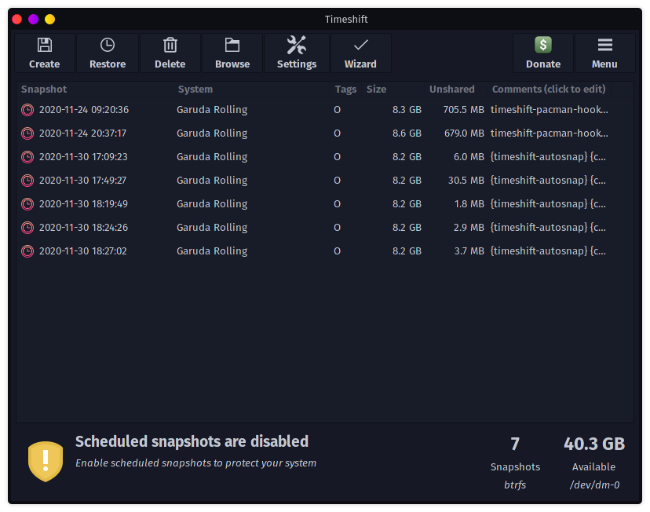
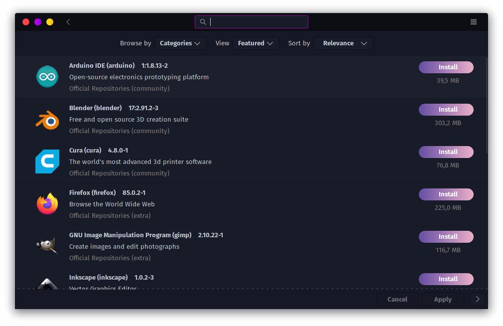
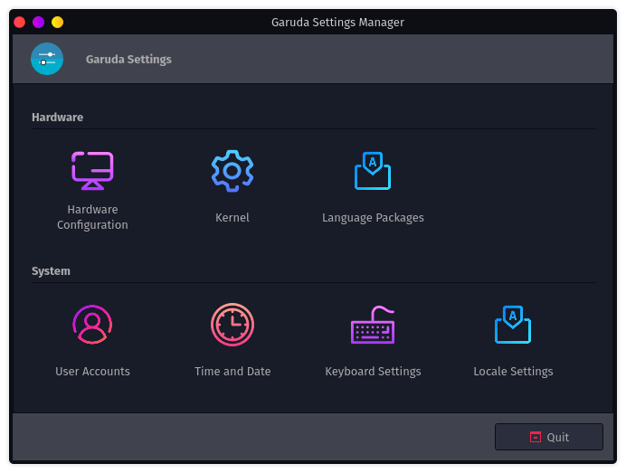
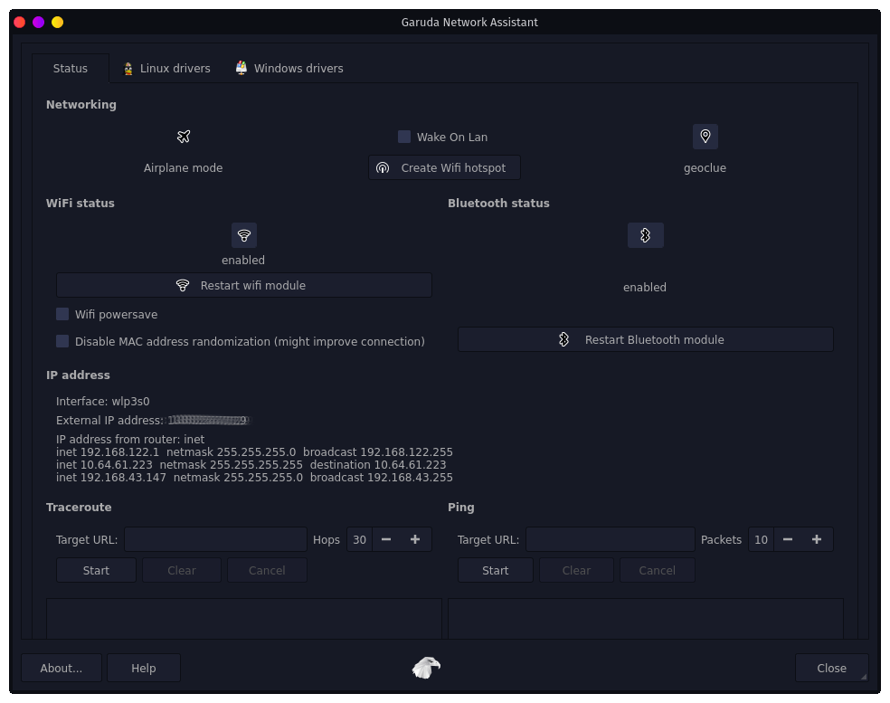

Welcome To
Garuda Linux
And choose your desktop environment from
KDE, GNOME, Xfce, Cinnamon, MATE, LXQt-kwin, Deepin, Wayfire, BSPWM and i3wm.
Special Spotlights
Easy Installation

We make the install process simple by using the Calamares installer which is both easy to use and makes the installation process fast.
Garuda Linux strives hard to provide better out of the box support for various drivers.
For proprietary Nvidia driver support: select the 'driver=nonfree' GRUB option at startup.
Automatic snapshots Out of Box using Timeshift

You can access 5 latest snapshots directly from GRUB
While being a rolling release distro our goal is to ensure that your system will not be left in an unbootable state after a problematic update. Thus we use the BTRFS filesystem integrated with Timeshift, which employs an automatic snapshot feature which backs up the system configuration before each update.*
GUI Software for package management (Pamac).

GUI for managing drivers and the kernel (Garuda Settings Manager).

GUI tools for various common tasks and welcome app.
GUI tools for network assistance (Garuda Network Assistant).

Unleash the beauty

With handpicked themes, fish shell and beautiful blur effects out of box, Garuda Linux never lets you down.
BTRFS as the default filesytem with zstd compression.
BTRFS is a modern copy on write (CoW) filesystem for Linux aimed at implementing advanced features while also focusing on fault tolerance, repair and easy administration.
Features
Rolling Release
Garuda Linux is a rolling release distro based on Arch Linux which ensures always getting the latest software updates.
We use only one extra repo on top of Arch Linux repos placing us very close to Arch Linux without having to install the system with CLI.
Linux-zen
A faster more responsive Linux kernel optimized for desktop, multimedia and gaming.
Result of a collaborative effort of kernel hackers to provide the best Linux kernel possible for everyday systems.
Focus on Performance
Our goal is to provide a distro that focuses only on performance while making it beautiful. Thats why we have made some (sane) performance tweaks.
- Improved I/O performance.
- Automatic CPU frequency scaling depending on load.
- ZRAM enabled by default.
- Nohang, an OOM prevention daemon.
- As well as Ananicy, which automatically sets nice levels on your system.
Ease of use
We use micro as default terminal-based text editor that aims to be easy to use and intuitive while taking advantage of the capabilities of modern terminals.
Garuda Linux offers you GUI tools for managing system settings out of the box to make your jumpstart easier.
Always Free
Garuda Linux will always be completely free. We create it to have a Linux based operating system that is easy to use.